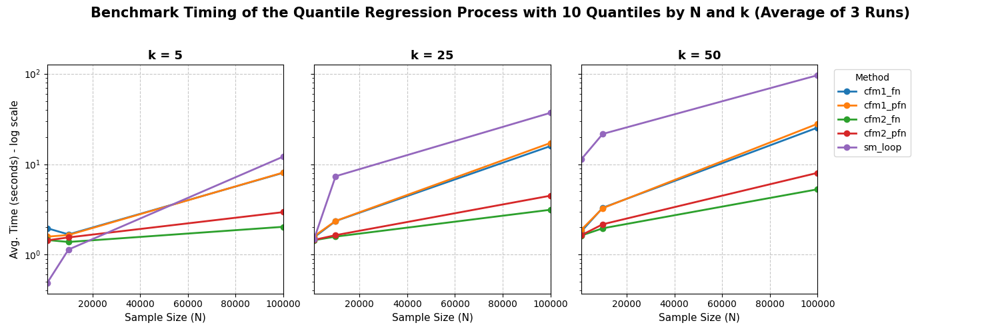

%load_ext autoreload
import pyfixest as pf
data = pf.get_data()Quantile Regression
PyFixest now experimentally supports quantile regression!
Basic Example
Just as in statsmodels, the function that runs a quantile regression is quantreg().
Below, we loop over 10 different quantiles.
%%capture
fits = pf.quantreg(
fml = "Y~X1 + X2",
data = data,
quantile=[0.1, 0.2, 0.3, 0.4, 0.5, 0.6, 0.7, 0.8, 0.9]
)We can inspect the quantile regression results using the dedicated qplot() function.
pf.qplot(fits, nrow = 2)(<Figure size 960x576 with 4 Axes>,
array([<Axes: title={'center': 'Intercept'}, xlabel='Quantile', ylabel='Coefficient (95 % CI)'>,
<Axes: title={'center': 'X1'}, xlabel='Quantile', ylabel='Coefficient (95 % CI)'>,
<Axes: title={'center': 'X2'}, xlabel='Quantile', ylabel='Coefficient (95 % CI)'>,
<Axes: >], dtype=object))We observe some heterogeneity in the intercept, but all other variants are homogeneous across users.
Solvers
By default, pf.quantreg uses an interior-point solver as in Koenker and Ng (2004) (methd = "fn"). This is different to e.g. statsmodels, which implements an iterated weighted least squares solver.
For big data sets with many observations, it is often sensible to use an interior-point solver with pre-processing (as in Portnoy and Koenker (1997), see Chernozhukov et al (2019) for details), which can speed up the estimation time significantly. Because the pre-processing step requires taking a random sample, the method assumes that observations are independent. Additionally, for the purpose of reproducibility, it is advisable to set a seed.
You can access the “preprocessing frisch-newton” algorithm by setting the method argument to "pfn":
%%capture
fit_fn = pf.quantreg(
fml = "Y ~ X1",
method = "fn", # standard frisch newton interior point solver
data = data,
)
fit_pfn = pf.quantreg(
fml = "Y ~ X1",
method = "pfn", # standard frisch newton interior point solver with pre-processing
seed = 92, # set a seed for reproducibility
data = data,
)
pf.etable([fit_fn, fit_pfn])Quantile Regression Process
Instead of running multiple independent quantile regression via a for-loop, the literature on quantile regression has developed multiple algorithms to speed up the “quantile regression process”. Two such algorithms are described in detail in Chernozhukov, Fernandez-Val and Melly (2019) and are implemented in PyFixest. They can be accessed via the multi_method argument, and both can significantly speed up estimation time of the full quantile regression process.
fml = "Y~X1"
method = "pfn"
seed = 929
quantiles = [0.1, 0.5, 0.9]
fit_multi1 = pf.quantreg(
fml = fml,
data = data,
method = method,
multi_method = "cfm1", # this is algorithm 2 in CFM, the 1rst algorithm for the full qr process
seed = seed,
quantile = quantiles,
)
fit_multi2 = pf.quantreg(
fml = fml,
data = data,
method = method,
multi_method = "cfm2", # this is algorithm 3 in CFM, the 2nd algorithm for the full qr process
seed = seed,
quantile = quantiles
)
pf.etable(fit_multi1.to_list() + fit_multi2.to_list())/home/runner/work/pyfixest/pyfixest/pyfixest/estimation/quantreg/quantreg_.py:77: FutureWarning:
The Quantile Regression implementation is experimental and may change in future releases.
But mostly, we expect the API to remain unchanged.
warnings.warn(
/home/runner/work/pyfixest/pyfixest/pyfixest/estimation/quantreg/quantreg_.py:77: FutureWarning:
The Quantile Regression implementation is experimental and may change in future releases.
But mostly, we expect the API to remain unchanged.
warnings.warn(| Y | ||||||
|---|---|---|---|---|---|---|
| (1) | (2) | (3) | (4) | (5) | (6) | |
| coef | ||||||
| X1 | -0.960*** (0.161) |
-1.091*** (0.107) |
-0.796*** (0.121) |
-1.091*** (0.161) |
-1.091*** (0.107) |
-1.091*** (0.121) |
| Intercept | -1.935*** (0.231) |
1.024*** (0.145) |
3.505*** (0.157) |
-1.354*** (0.231) |
1.024*** (0.145) |
3.403*** (0.157) |
| stats | ||||||
| Observations | 998 | 998 | 998 | 998 | 998 | 998 |
| S.E. type | nid | nid | nid | nid | nid | nid |
| R2 | - | - | - | - | - | - |
| Adj. R2 | - | - | - | - | - | - |
| Significance levels: * p < 0.05, ** p < 0.01, *** p < 0.001. Format of coefficient cell: Coefficient (Std. Error) | ||||||
Note that the first method cfm1 is exactly identical to running separate regressions per quantile, while the second method cfm2 is only asymptotically identical.
You can combine different estimation method’s with different multi_methods:
fit_multi2a = pf.quantreg(
fml = "Y~X1",
data = data,
method = "fn",
multi_method = "cfm1",
seed = 233,
quantile = [0.25, 0.75]
)
fit_multi2b = pf.quantreg(
fml = "Y~X1",
data = data,
method = "pfn",
multi_method = "cfm1",
seed = 233,
quantile = [0.25, 0.75]
)
pf.etable(fit_multi2a.to_list() + fit_multi2b.to_list())/home/runner/work/pyfixest/pyfixest/pyfixest/estimation/quantreg/quantreg_.py:77: FutureWarning:
The Quantile Regression implementation is experimental and may change in future releases.
But mostly, we expect the API to remain unchanged.
warnings.warn(
/home/runner/work/pyfixest/pyfixest/pyfixest/estimation/quantreg/quantreg_.py:77: FutureWarning:
The Quantile Regression implementation is experimental and may change in future releases.
But mostly, we expect the API to remain unchanged.
warnings.warn(| Y | ||||
|---|---|---|---|---|
| (1) | (2) | (3) | (4) | |
| coef | ||||
| X1 | -0.851*** (0.109) |
-1.017*** (0.126) |
-0.851*** (0.109) |
-1.017*** (0.126) |
| Intercept | -0.782*** (0.132) |
2.495*** (0.169) |
-0.782*** (0.132) |
2.495*** (0.169) |
| stats | ||||
| Observations | 998 | 998 | 998 | 998 |
| S.E. type | nid | nid | nid | nid |
| R2 | - | - | - | - |
| Adj. R2 | - | - | - | - |
| Significance levels: * p < 0.05, ** p < 0.01, *** p < 0.001. Format of coefficient cell: Coefficient (Std. Error) | ||||
Inference
By default, the "iid", "hetero" and cluster robust variance estimators implement (sandwich) estimators as in Powell (1991), using a uniform kernel to estimate the “sparsity”.
The cluster robust estimator follows Parente & Santos Silva. See this slide set or the Journal of Econometrics paper for details.
Additionally, pf.quantreg supports the "nid" (“non-iid”) estimator from Hendricks and Koenker (1991), which uses a linear approximation of the conditional quantile function.
fit_nid = pf.quantreg("Y ~ X1 + X2 + f1", data = data, quantile = 0.5, vcov = "nid")
fit_crv = pf.quantreg("Y ~ X1 + X2 + f1", data = data, quantile = 0.5, vcov = {"CRV1": "f1"})/home/runner/work/pyfixest/pyfixest/pyfixest/estimation/quantreg/quantreg_.py:77: FutureWarning:
The Quantile Regression implementation is experimental and may change in future releases.
But mostly, we expect the API to remain unchanged.
warnings.warn(
/home/runner/work/pyfixest/pyfixest/pyfixest/estimation/quantreg/quantreg_.py:77: FutureWarning:
The Quantile Regression implementation is experimental and may change in future releases.
But mostly, we expect the API to remain unchanged.
warnings.warn(Performance
Here we benchmark the performance of the solvers accessible via the method and multi_method arguments.
Different Solvers
Tba.
Quantile Regression Process
We fit a quantile regression process on \(q = 0.1, 0.2, ..., 0.9\) quantiles and vary sample size and number of covariates. We test pyfixest’s implementation of the quantile regression process against a “naive” for loop implementation via statsmodels. We can see that both multi_method = "cmf1" and multi_method = "cmf2" outperform the for-loop strategy for large problems. Note that the plot is in log-scale!

Literature
- Victor Chernozhukov, Iván Fernández-Val, Blaise Melly (2019): Fast Algorithms for the Quantile Regression Process - link
- Hendricks & Koenker (1991): Hierarchical spline models for conditional quantiles and the demand for electricity - link
- Koenker and Ng (2004): A Frisch-Newton Algorithm for Sparse Quantile Regression - link
- Parente & Santos Silva (2015): Quantile Regression with Clustered Data - link
- Portnoy & Koenker (1997): The gaussian hare and the laplacian tortoise: Computability of squared-error versus absolute-error estimators - link
- Powell (1991): Estimation of monotonic regression models under quantile restrictions - link